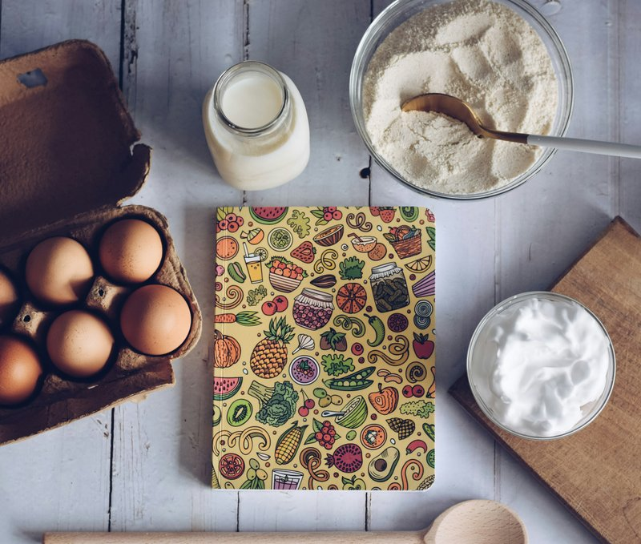

Recipe organization usually starts with a shopping trip. You pick a meal plan, write a list, and buy ingredients for recipes you may or may not get around to. The produce wilts, the plan shifts, and by Thursday you're making pasta with whatever's left in the fridge. The backwards method flips this: start with what you already have, and plan outward from there.

Step one: write down what you actually make
Not what you want to make. Not what you pinned three years ago. The ten to fifteen meals your household actually eats on a regular rotation. These are your core recipes — the ones where you know the ingredients without checking, where the timing is muscle memory, where you've made it enough times that you've stopped measuring the garlic.
Write these down on real cards. One recipe per card. Include the full ingredient list, the steps, the cook time, and any notes you've learned through repetition — "takes longer than the recipe says," "double the sauce," "freezes well." These core cards are your kitchen's operating system. Everything else is optional.
Step two: the five-minute pantry check
Before you plan a single meal for the week, open your fridge and pantry and write down what needs to be used. Half a cabbage. Three sweet potatoes. A block of feta. The parsley that's still good but won't be by Wednesday. This list is more useful than any meal plan because it tells you what's actually available. Your core recipe cards should guide what meals these ingredients can become.
Maybe the half cabbage becomes coleslaw to go with pulled chicken. The sweet potatoes get roasted and served with black beans and lime. The feta goes into a pasta salad that uses up the parsley too. Each ingredient finds a home because you already know your core recipes and you're matching, not starting from scratch.
Step three: keep one or two wild cards
Your core recipes handle the weeknights. But you also need a place for the recipes you're trying — the new one from a friend, the dish you had at a restaurant and want to figure out, the seasonal thing that only makes sense once a year. These are your wild cards. Keep them in a separate section. When one earns its way into the regular rotation, promote it to the core stack. When one doesn't, let it go.
What makes a good recipe card
A recipe card should give you everything you need to cook the dish without consulting anything else. That means:
- All the ingredients, in order of use. Grouped by step if the recipe has multiple stages. No flipping back and forth.
- Times that are honest. Prep time, cook time, and total time — including the parts where you're just waiting. "30 minutes" that actually takes an hour because you have to chop everything first trains you not to trust your own cards.
- Space for notes. Every time you make a recipe, you learn something. More salt. Less liquid. A different pan. Write it down or lose it.
Paper cards work because they're indestructible. They survive spilled broth, floury hands, and toddlers. A phone screen doesn't. A tablet propped on the counter doesn't. A three-by-five card wedged between the salt and the pepper mill works every time, no battery required.
The Recipe Card Binder Inserts give you a clean template for every recipe: name, prep time, cook time, total time, 13 ingredient slots, full instructions, and notes. Type your recipes in your browser — no Canva account, no signup, no third-party website — or print them blank and write by hand. Includes a printable PDF for binder storage.
Recipe Cards on Etsy →